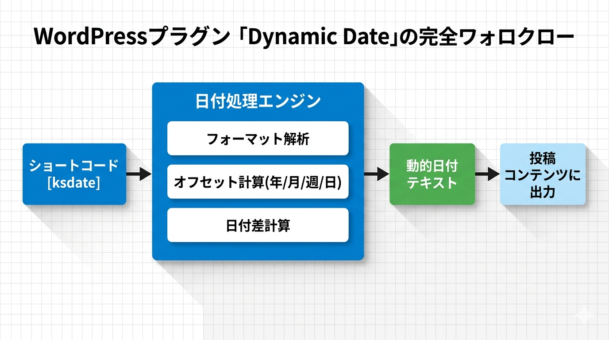

Kashiwazaki SEO Dynamic Date マニュアル
ショートコード [ksdate] を使って、投稿や固定ページに動的な日付を挿入できるWordPressプラグインです。コンテンツ内の日付を常に最新に保ち、SEO効果の向上を支援します。
WordPressで記事を公開する際、「2026年4月1日更新」のように日付を手書きすると、時間の経過とともに情報が古く見えてしまいます。本プラグインは [ksdate] ショートコードを使って、今日の日付やオフセット計算した日付、2つの日付の差分を動的に表示します。記事の内容を変更することなく、日付部分だけが常に最新の値で表示されるため、エバーグリーンコンテンツの運用に最適です。管理画面では設定・プレビュー・使い方・サンプルの4タブ構成で、ショートコードの確認と生成が簡単に行えます。
主な機能
動的日付表示
ショートコードで「今日」「3日後」「先月」等の動的な日付をコンテンツに挿入
日付オフセット
年・月・週・日単位でのオフセット計算に対応。期間表示や更新日の自動化に
日付差計算
2つの日付間の差分を自動算出。経過日数や残り日数の表示が可能
全体ワークフロー

SEO / GEO における強み
本プラグインはJSON-LDやmetaタグを出力する機能は持っていません。あくまでショートコードによる動的日付挿入を行う管理ツールです。しかし、コンテンツ内の日付を動的に保つことは、SEOおよびGEO（Generative Engine Optimization）の観点からサイト評価の向上に役立つ可能性があります。
動的日付によるコンテンツの鮮度維持
検索エンジンはコンテンツの鮮度を評価指標の一つとしています。記事中に「2026年4月1日更新」のようにハードコードされた日付があると、時間の経過とともに古い情報として認識される可能性があります。[ksdate] を使えば、ページが表示されるたびに最新の日付が自動的に挿入されるため、コンテンツが常に新鮮な状態で表示されます。
ユーザー体験とクリック率の向上
検索結果やサイト内で「最終更新日」が最近の日付であれば、ユーザーは情報が最新であると認識し、クリック率や滞在時間の向上が期待できます。動的日付を活用することで、手動更新なしにコンテンツの信頼性を維持できます。
エバーグリーンコンテンツの長期的な価値
ハウツー記事やFAQ、料金表など、長期間にわたって参照されるコンテンツでは、日付の古さが離脱の原因になります。動的日付を使うことで、コンテンツ本文を変更せずに常に最新感を維持でき、エバーグリーンコンテンツとしての寿命を延ばせます。
GEO（生成AI検索）への対応
ChatGPT SearchやGoogle AI Overviewなどの生成AI検索では、AIが情報の鮮度や権威性を考慮して回答を生成します。コンテンツに最新の日付が含まれていると、AIがより新しく信頼性の高い情報源として優先的に引用する可能性があります。動的日付によってコンテンツの鮮度を自動的に保つことは、GEO対策としても有効です。
目次
| ページ | 内容 |
|---|---|
| 概要 | プラグインの機能概要と全体像 |
| インストール・初期設定 | インストール手順、管理画面の構成、デフォルトフォーマット設定 |
| ショートコードの使い方 | ショートコードの属性、オフセット、日付差計算の詳細 |
| トラブルシューティング | よくある問題と解決方法 |
動作要件
| 項目 | 要件 |
|---|---|
| WordPress | 5.8以上 |
| PHP | 7.4以上 |